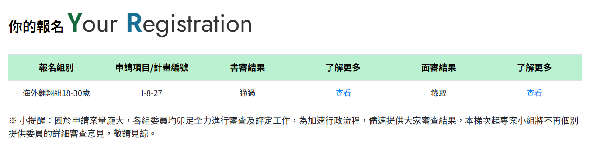

我很榮幸向各位分享，我順利通過教育部青年發展署「青年百億海外圓夢基金計畫」115年第二梯次「海外翱翔組」的審查，將於今年暑期至加拿大的不列顛哥倫比亞理工學院(BCIT)進行一個月的學習。
經歷了書審與面審後，順利錄取「I-8-27 加國機械工程實作」。我期許自己能在不同的環境中，與志同道合的夥伴切磋交流，深化對機械工程的實務認知。更透過寶貴的國際交流機會拓展視野，讓我成為一位更好的機械人。
我撰寫了「青年百億計畫申請經歷」，記錄了我申請本計畫的準備過程與經歷。，我也會持續在文章中更新錄取後的加拿大生活與學習心得，歡迎對青年百億計畫有興趣的讀者可以閱讀本文章並與我交流。
👉 完整心得文章：《青年百億計畫申請經歷》
HackMD文章
